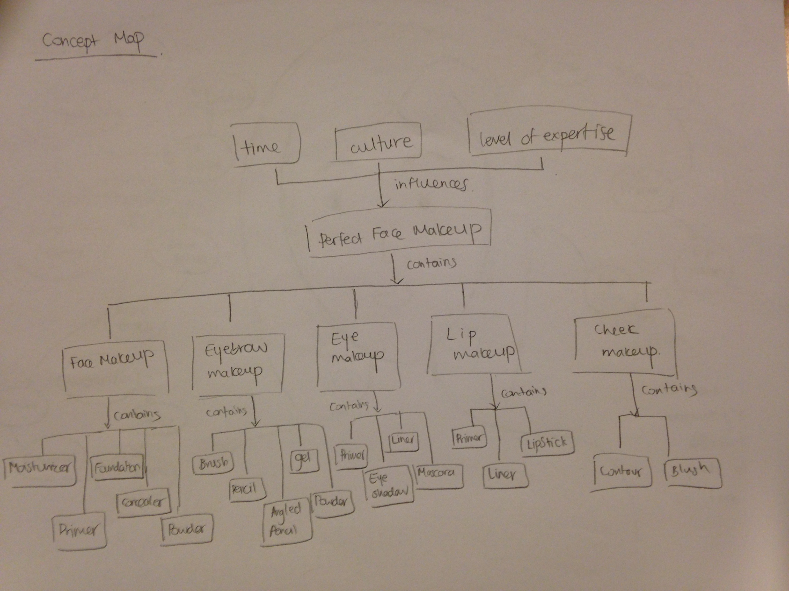
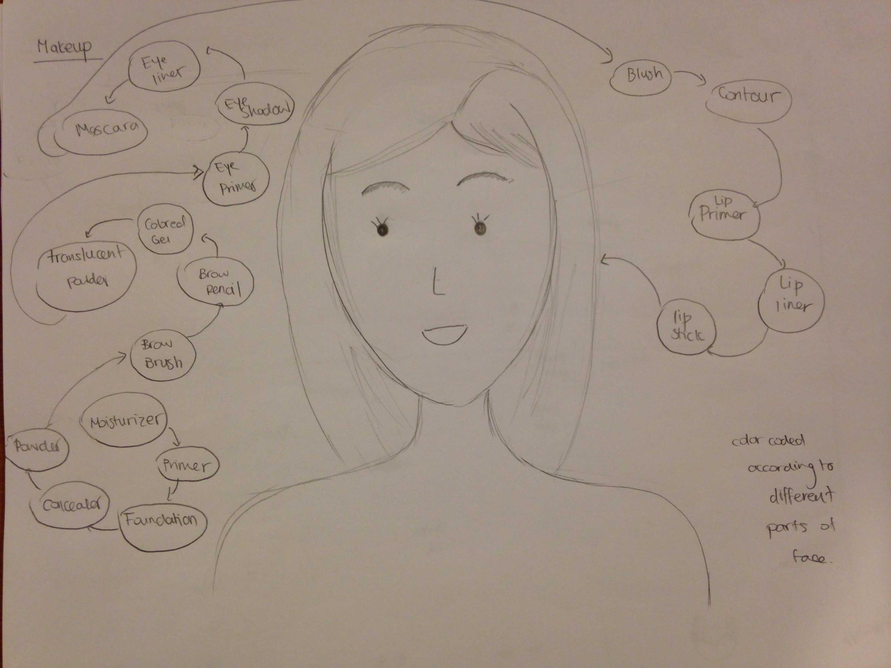
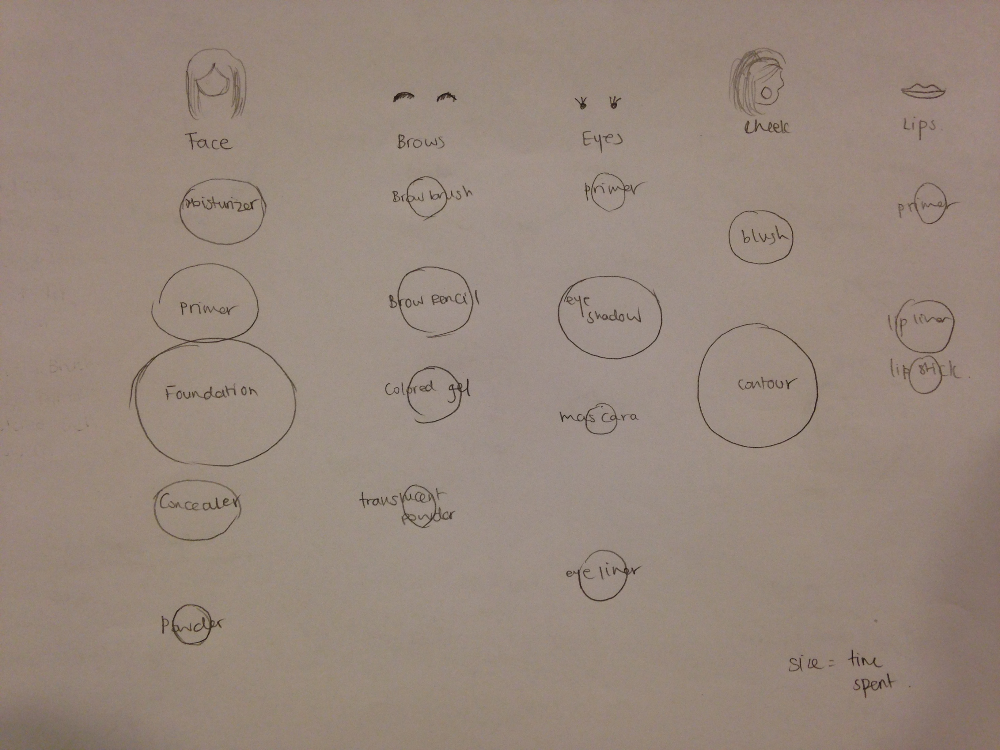
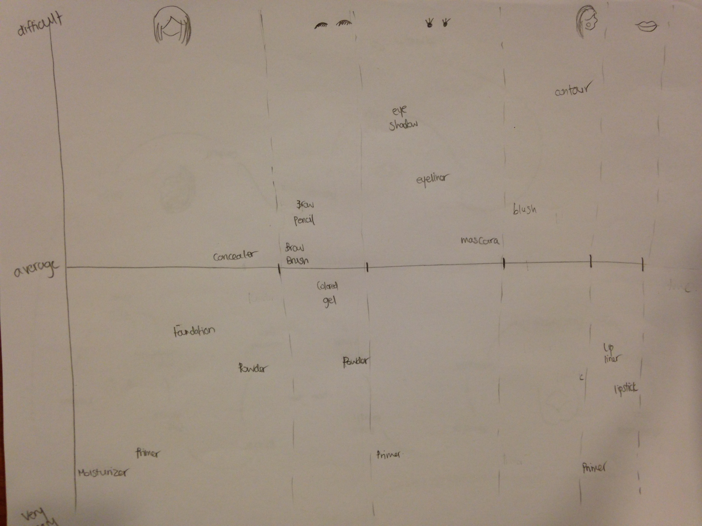
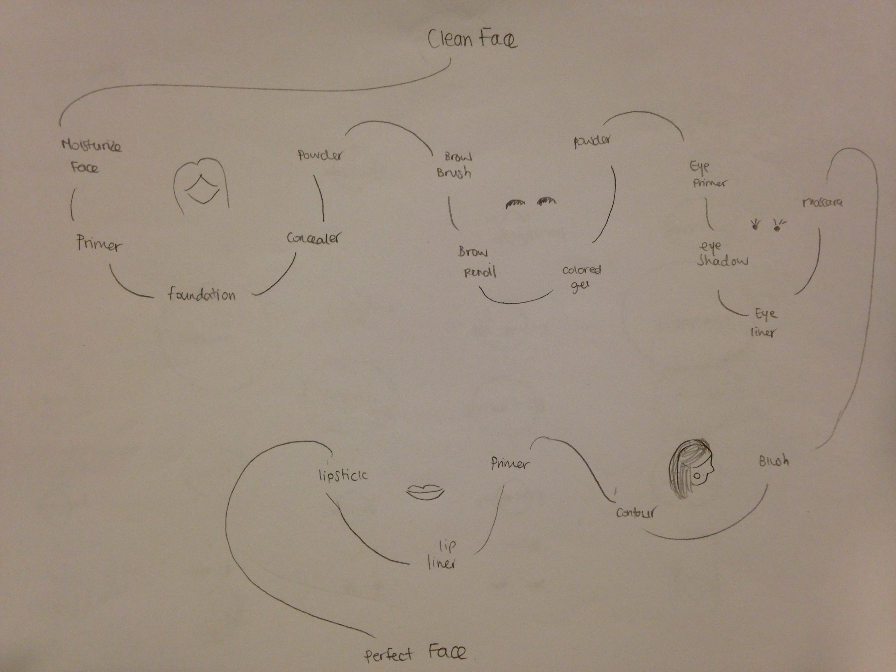
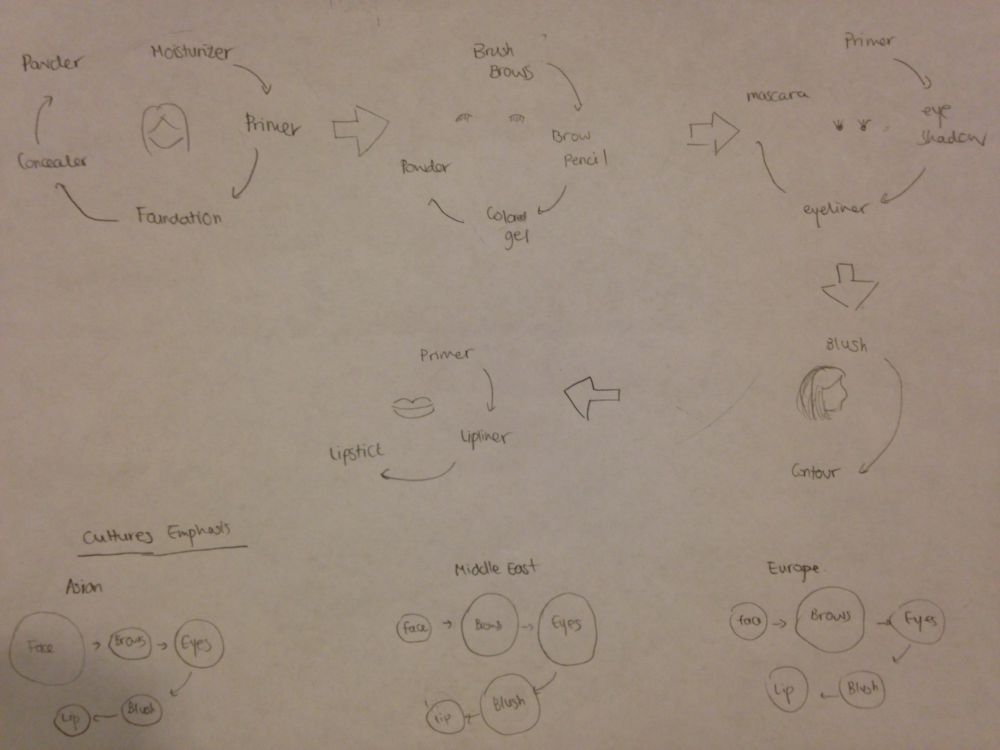

In service design, one of our projects was to create a conceptual model describing a simple process, experience, or human activity.
The human activity I chose was putting on makeup. Makeup is a complex and interesting concept since different people wear makeup in different ways. The amount and style of makeup is also influenced by a variety of factors, including budget, culture, and time.
I started off with creating a concept map of this model. I felt that creating a concept map will help me better understand the big picture behind this idea. It will also illustrate all the concepts involved with this idea and how they are related to each other.

These are some of the sketches that I came up with. I tried different ways of representing this concept, including using a map model, a spider model, a flow diagram, a venn diagram, and a matrix.
For the idea, I tried to map the different parts of the face to different products. I tried a lot of iterations where different products are on different part of the face, magnification of facial parts and surrounding the products around them.

Next, I tried to split up every part of the face and represent the process and order you put on each product with the size of the circle being the time you need to put on the product.

I then tried using a matrix to represent it.

This sketch was also a different way of representing the flow by grouping the products on different facial parts.

Lastly, I tried to use a way to represent the cultural emphasis on makeup. This concept is really interesting because different cultures have different facial features and each culture usually tens to highlight a different aspect of it. For example, in the Asian culture, women tries to make their skin look as white as possible, like a flawless porcelain. Therefore, they would place more emphasis on their face. In Arab culture, beauty is defined by having dark, defined brows and a dramatic look on their eyelids. After doing much research on many cultures, I came up with this sketch.
